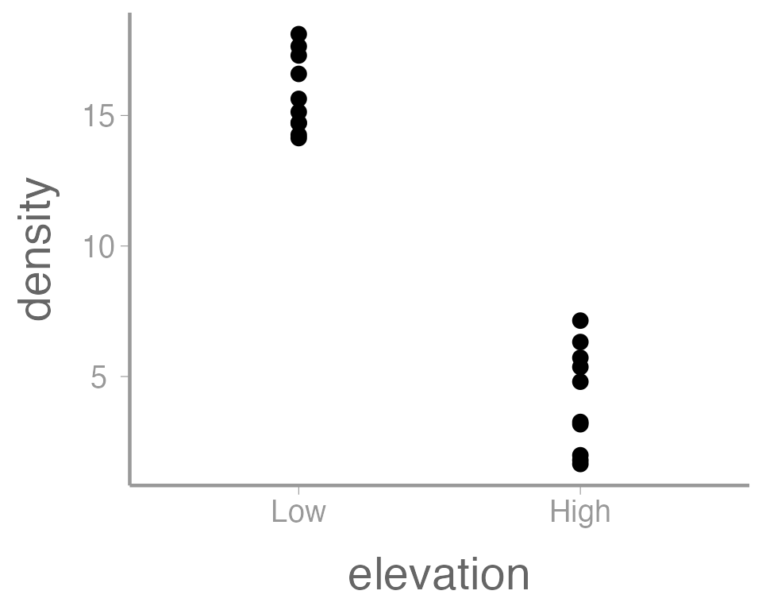
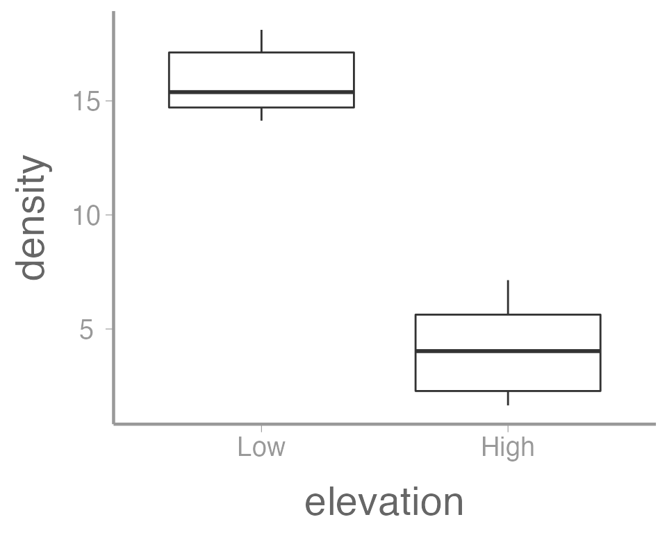
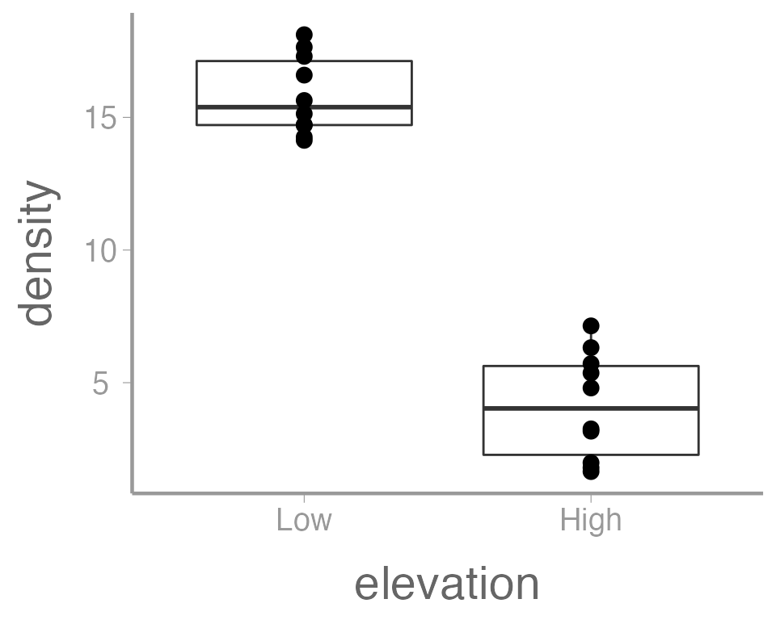
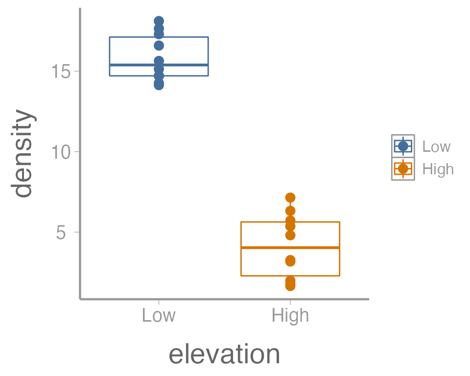
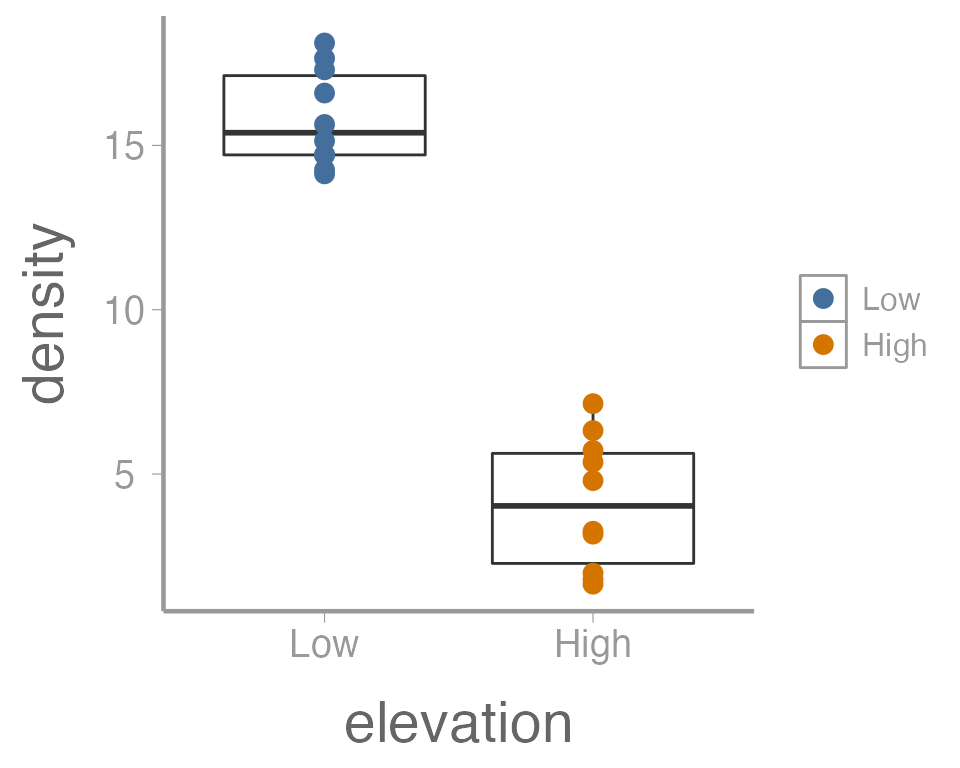

Lab 2: t-tests
FANR 6750: Experimental Methods in Forestry and Natural Resources Research
Fall 2021
lab03_t-tests.RmdLab 1
Using
Ras calculatorScripts
Vectors and object classes
Subsetting vectors
Built-in functions/help
Data frames
Subsetting data frames
Today’s topics
Introduction
Graphics
-
t-tests
Two-sample t-xtest
Equality of variance test
Paired t-test
Introduction
Scenario
We have 2 samples of data
Question: Do the samples come from the same population, or do they come from populations with different means?
Problem: We don’t know the true population means (\(\mu_1\), \(\mu_2\))
-
Under the assumption that the variances of the two populations are equal, the relevant hypotheses are:
\(H_0 : \mu_1 = \mu_2\)
\(H_A : \mu_1 \neq \mu_2\)
Key points
If the two sample means (\(\bar{y}_1\), \(\bar{y}_2\)) are very different and the standard error of the difference in means is small, the \(t\)-statistic will be far from zero
If the \(t\)-statistic is more extreme than the critical values, we reject the null hypothesis (\(H_0\))
Exercise 1
Open your
FANR6750RStudio project (if you have one)Create a new
Rscript and save it to the directory where you store you lab activities. Name it something likelab02-t_tests.RLoad the
FANR6750package and thetreedataobject
library(FANR6750)
data("treedata")- Create 2 objects:
yLis the tree density data for the first 10 experimental units (low elevation), andyHis the tree density data for the last 10 units (high elevation)
yL <- treedata$density[treedata$elevation == "Low"]
yH <- treedata$density[treedata$elevation == "High"]- Create objects that contain the mean, variance, and standard deviation of the 2 samples
mean.L <- ?
mean.H <- ?
s2.L <- ?
s2.H <- ?
s.L <- ?
s.H <- ?Graphics
R has very powerful graphing capabilities that make it
possible to create data visualizations for reports or publications. As
with most tasks in R, there are many ways to create graphs
and you will find that people have very strong feelings about the best
approach.
The debate over graphics in R usually boils down to
using the built-in graphing functions (“base graphics”) vs the
ggplot2 package. Full disclosure, I much prefer
ggplot2 and therefore most of the sample code provided in
lab will reflect that preference. However, I don’t care how you
make your plots as long as they effectively display the information you
are trying to convey. If you prefer base graphics, by all means
use base graphics.
Brief introduction to ggplot2
Because the code I provide will use ggplot2, it is worth
briefly learning/reviewing how this package approaches data
visualization.
The power and flexibility of ggplot2 come from it’s
consistent structure. Although a bit confusing at first, once you get
the hang of it, the structure actually makes it quite easy to create
highly customized visualizations. All plots created using
ggplot2 use the same underlying structure:
\[\underbrace{ggplot}_{initiate\; plot}(\underbrace{data = df}_{data\;frame},\; \underbrace{aes(x =\; , y = \;)}_{plot\; attributes}) + \underbrace{geom\_line()}_{geometry}\]
The ggplot() function initiates a new plot. In this
function, you tell ggplot2 what data frame you will be
using for the plot (ggplot only accepts data frames as
input) and you tell it how to map attributes of the data to the visual
properties of the figures. Attributes are mapped inside the
aes() argument. Attributes usually include location
(x-axis and y-axis placement), color, size,
shape, line type, and many others. In general, each attribute
will be mapped to one column of your data frame.
The ggplot() function simply initiates a graph - if you
run just that portion of the code you will get a blank graph. We can see
that by creating a new plot showing the relationship between
elevation (the x-axis of the plot) and density
(the y-axis):
ggplot(data = treedata, aes(x = elevation, y = density))You can see that ggplot created a figure with the
correct axes and labels. But no data. That’s because we didn’t tell
ggplot what type of geometry to use to represent
the data. Geometry refers to the type geometric object(s) we want to use
to display the data. Common geometries include points (e.g., scatter
plot), lines (e.g., time series), and bars (e.g., histograms). There are
many others. Once we add a geometry, we can see the data:
ggplot(data = treedata, aes(x = elevation, y = density)) +
geom_point()In this case, a boxplot might make more sense:
ggplot(data = treedata, aes(x = elevation, y = density)) +
geom_boxplot()
It’s also possible to use more than one geometry:
ggplot(data = treedata, aes(x = elevation, y = density)) +
geom_boxplot() +
geom_point()
This is reasonable figure showing tree densities as a function of
elevation. But ggplot2 makes it very easy to tweak the way
the data is visualized (maybe too easy, you can spend a lot of
time tweaking minor details). For example, maybe we want to color the
points based on the elevation. Because we want to map an
attribute (color) to a variable (elevation), we make
this change inside of aes:
ggplot(data = treedata, aes(x = elevation, y = density, color = elevation)) +
geom_boxplot() +
geom_point()
That’s not exactly what we wanted. Both the boxplot and the points
now colored a function of elevation. To make just the
points a function of elevation, we specify
color = elevation inside of the geom_point()
function (anything in the ggplot() function will apply to
all geoms):
ggplot(data = treedata, aes(x = elevation, y = density)) +
geom_boxplot() +
geom_point(aes(color = elevation))
We can also do things like the change the size of the geometries. In
this case, we are not mapping a variable to an
attribute (size is not a function of the data values). So these changes
happen outside of the aes() argument:
ggplot(data = treedata, aes(x = elevation, y = density)) +
geom_boxplot() +
geom_point(aes(color = elevation), size = 5)
One last example. Because many of the points overlap, it can be hard
to tell how many individual points there are in each group. One way to
deal with overplotting like this is to make each point slightly
transparent. We can do that with the alpha parameter:
ggplot(data = treedata, aes(x = elevation, y = density)) +
geom_boxplot() +
geom_point(aes(color = elevation), size = 5, alpha = 0.5)
Again, because we aren’t mapping the alpha value to any data, we
include it outside of aes().
Exercise 2
The graph above is fine for a quick visualization of the data but wouldn’t be appropriate for including in publications or reports. On your own,
Improve the axis labels. This could include: title case, units, font size, etc. Run
?scale_y_continuousand?scale_x_discreteif you need some help (and note the difference between these two functions!).?thememay also be usefulManually change the color of the points (
?scale_color_manual)Instead of displaying the data using a boxplot, create histograms showing the distribution of tree densities at each elevation (
?geom_histogram)
As you learn about graphics functions, whether base or
ggplot2, you will probably need to look up help for how to
do certain things. Google is usually your best bet but here are a few
other good references:
The fantastic Fundamentals of Data Visualization book by Claus Wilke
The
ggplot2package websiteAs, yes, even the base
Rgraph gallery
t-tests
Two-sample t-test with equal variances
Back to the t-test. Remember the basic steps for performing a two-sample t-test:
Option 1: Do it by hand
Step 1: Compute the \(t\) statistic:
library(FANR6750)
data("treedata")
# Subset data
yL <- treedata$density[treedata$elevation == "Low"]
yH <- treedata$density[treedata$elevation == "High"]
# Compute means
mean.L <- mean(yL)
mean.H <- mean(yH)
# Compute variances
s2.L <- var(yL)
s2.H <- var(yH)
# Sample sizes
n.L <- length(yL)
n.H <- length(yH)
# Pooled variance
s2.p <- ((n.L-1)*s2.L + (n.H-1)*s2.H)/(n.L+n.H-2)
# Pooled standard error
SE <- sqrt(s2.p/n.L + s2.p/n.H)
# Compute t-statistic
t.stat <- (mean.L - mean.H) / SE
t.stat
#> [1] 14.36Option 2: Let R do all the work
t.test(yH, yL, var.equal = TRUE, paired = FALSE, alternative = "two.sided")
#>
#> Two Sample t-test
#>
#> data: yH and yL
#> t = -14, df = 18, p-value = 3e-11
#> alternative hypothesis: true difference in means is not equal to 0
#> 95 percent confidence interval:
#> -11.858 -8.831
#> sample estimates:
#> mean of x mean of y
#> 5.568 15.913Make sure you set var.equal=TRUE. Otherwise,
R will assume that the variances of the two populations are
unequal
Option 2: Let R do all the work (alternate syntax)
t.test(density ~ elevation, data = treedata,
var.equal = TRUE, paired = FALSE,
alternative = "two.sided")
#>
#> Two Sample t-test
#>
#> data: density by elevation
#> t = 14, df = 18, p-value = 3e-11
#> alternative hypothesis: true difference in means is not equal to 0
#> 95 percent confidence interval:
#> 8.831 11.858
#> sample estimates:
#> mean in group Low mean in group High
#> 15.913 5.568This second option returns identical results (though note that the order of the levels has been switched. Why is that?), but it is preferred because the notation is much more similar to the notation used to fit ANOVA models
Test equality of variances using var.test
var.test(yL, yH)
#>
#> F test to compare two variances
#>
#> data: yL and yH
#> F = 0.61, num df = 9, denom df = 9, p-value = 0.5
#> alternative hypothesis: true ratio of variances is not equal to 1
#> 95 percent confidence interval:
#> 0.1521 2.4653
#> sample estimates:
#> ratio of variances
#> 0.6123Paired t-test
Is the mean different from zero?
ggplot(data = caterpillar, aes(y = diff)) +
geom_boxplot() +
geom_hline(yintercept = 0, linetype = "dashed")Paired t-test
Recall: Paired t-test is the same as a one-sample t-test on the differences. The hypothesis in the caterpillar example is one-tailed:
\(\large H_0 : \mu_d \leq 0\)
\(\large H_A : \mu_d > 0\)
Excercise (not for a grade!)
Create an R Markdown file to do the following:
- Create an
Rchunk to load the caterpillar data using:
Make a figure to show the caterpillar counts on treated and untreated plots. If you plan to use
ggplot2, you may want to learn about thepivot_longer()function from thetidyrpackage to reformat the data frame in the “long” format, which will make the plotting code easier.Create a header called “Hypotheses” and under this header, in plain English indicate what the null and alternative hypotheses are for the paired t-test. Also use R Markdown’s equation features to write these hypotheses using mathematical notation
Create a header called “Paired t-test by hand”. Under this header, do a paired t-test on the caterpillar data without using the
t.test()function. Use only the functionsmean,sd, and possiblylength. Be sure to annotate your code (either within theRchunk using#or as plain text within the R Markdown file) and state the decision (reject or accept the null) based on your results.-
Create a header called “Paired t-test in R”. Under this header, do the paired t-test again, but this time using the
t.testfunction.You will need to use the paired argument when using the
t.testfunctionAssume variances are equal
Create a header called “Unpaired t-test in R”. Under this header, do a standard (unpaired) two-sample t-test using the
t.test()functionAdd a section at the end of your file called “Discussion” and explain why the results differ between the paired and unpaired analysis
A few things to remember when creating the document:
Be sure the output type is set to:
output: html_documentBe sure to set
echo = TRUEin allRchunks so that all code and output is visible in the knitted documentRegularly knit the document as you work to check for errors
See the R Markdown reference sheet for help with creating
Rchunks, equations, tables, etc.